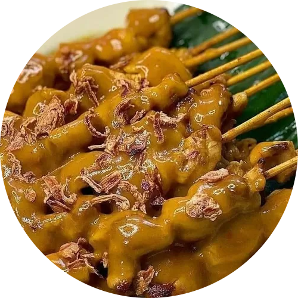

Sate Padang
Sate padang adalah sebutan 3 varian sate di Sumatera Barat (sate padang, sate padang panjang dan sate pariaman). Sate padang memakai bahan daging sapi, lidah, biji atau jeroan dengan bumbu kuah kacang kental.
Bahan-Bahan
6 siung bawang merah
4 siung bawang putih
6 cm kunyit
1 sdm ketumbar
8 buah cabai keriting
1 sdt jinten
3 cm jahe
5 lembar daun jeruk
2 batang serai
5 cm lengkuas
1 sdm garam
50 gram tepung beras
600 ml air
100 gram kacang tanah, sangrai, tumbuk kasar
Cara Membuat
1. Sangrai ketumbar dan jinten, sisihkan;
2. Masukkan bawang merah, bawang putih, kunyit, jahe, lengkuas, cabai keriting dan bumbu ketumbar, serta jinten yang disangrai. Haluskan dalam food processor;
3. Tumis bumbu halus hingga harum, tambahkan serai, daun jeruk, dan garam. Sisihkan setelah bumbu terlihat sedikit kering;
4. Didihkan air, masukkan bumbu yang telah dibalut;
5. Selanjutnya masukkan daging sapi untuk sate ke dalamnya, rebus selama satu jam atau hingga air berkurang setengahnya;
6. Ambil dan tiriskan daging, biarkan air bumbu tetap di atas kompor;
7. Ambil sedikit air sisa rebusan ke dalam mangkuk, lalu campur dengan tepung beras. Kemudian masukkan kembali campuran kuah dan tepung beras tersebut ke dalam panci;
Masukkan kacang tanah yang sudah disangrai. Aduk merata hingga tekstur saus mengental;
Tips:
- Kalau tidak ada food processor, bisa gunakan blender dengan menambahkan sedikit air. Namun saat menumis, butuh waktu sedikit lebih lama hingga air habis dan bumbu nampak kering;
- Kalau bumbu dirasa terlalu banyak untuk sekali makan, kamu bisa menyimpannya. Sebelum menambahkan tepung beras untuk mengentalkan, simpan bumbu ke dalam beberapa wadah atau kantong plastik, lalu letakkan ke dalam freezer. Kamu hanya perlu mencairkannya kembali di dalam suhu ruang, merebusnya, dan menambahkan tepung beras dengan cara yang sama.
